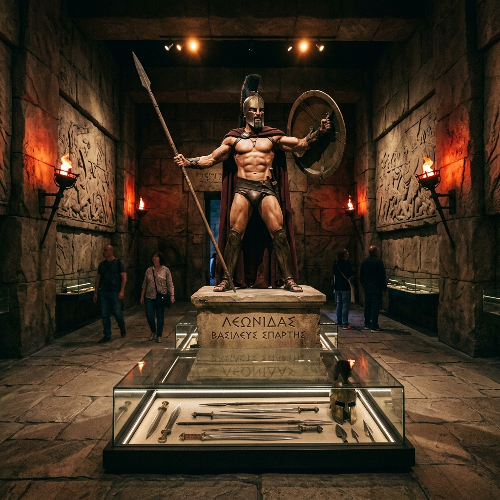
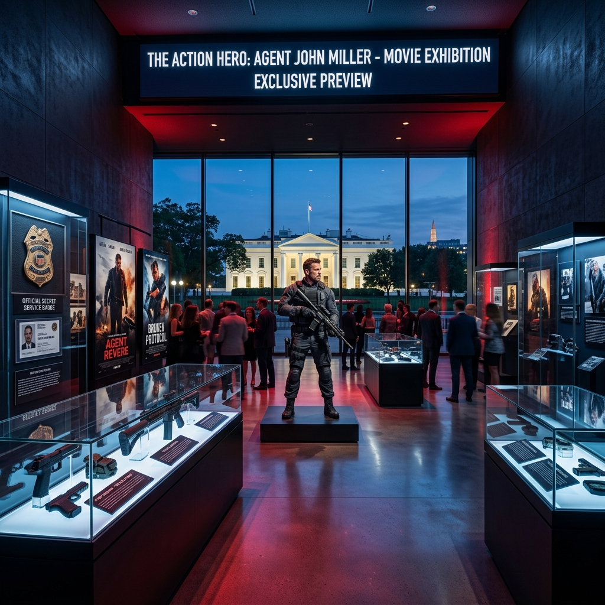
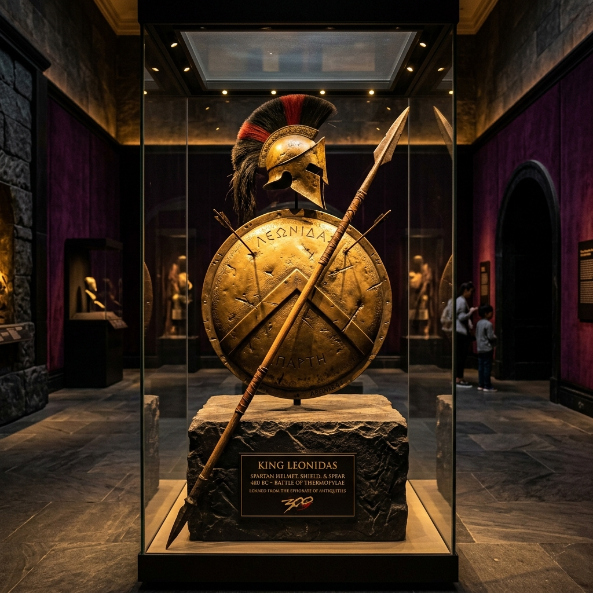

Step inside the world of Gerard Butler like never before. Exclusive tours, behind-the-scenes access, and rare artifacts — reserved for those who truly belong.
Gerard Butler's dedicated fan museum is opening its doors for the very first time — and VIP members get early access before the public. Walk through curated exhibition halls that chronicle his career from the Glasgow stage to Hollywood blockbusters.
Discover early career memorabilia, original casting call documents, and behind-the-scenes snapshots from his breakthrough in Dracula 2000 and Lara Croft: Tomb Raider.

The centrepiece of the museum — life-size recreations of the Battle of Thermopylae set, original screen-used props, and the iconic Spartan shield and spear.
A fully recreated Phantom of the Opera set piece, featuring original costumes, the iconic white mask worn by Butler, and music from the production.

From Olympus Has Fallen to Angel Has Fallen, Den of Thieves and Plane — celebrate every action role with authentic props and production stills.
An unbelievable once-in-a-lifetime opportunity. Selected VIP members will receive an exclusive guided tour of Gerard Butler's private residence. See his personal library, home gym, art collection, and the private screening room where he watches his own films before release.
Experience films the way Gerard does — in his personal in-home cinema. VIP guests will watch an exclusive unreleased clip together with him.
Awards, signed scripts, framed posters, personal notes from directors and co-stars — all displayed in a room he calls his "Hall of Memories."
Walk the aisles of an extensive archive of every major costume Gerard Butler has worn across his career. Pieces have been preserved and catalogued from these films:
Based on collector reviews, auction records, and fan community consensus — these are the most prized, museum-worthy artifacts associated with Gerard Butler's career:

The most sought-after prop in Butler's career. Hero-version helmets from close-up shots feature battle distress marks and custom internal padding. Auction value: $25,000+
Considered one of cinema's most iconic masks. The screen-used version is one of the most recognized fan memorabilia items and frequently featured in museum collections.
The full Battle of Thermopylae combat set. Fans consistently rate this as the most impressive piece of cinematic armory from Butler's entire catalogue.
Original prop love letters written by Gerry Kennedy (Butler). These emotionally charged pieces command high prices due to the film's overwhelming sentimental impact on fans.
The screen-used Secret Service ID and badge worn by Mike Banning. Among the most popular action prop collectibles from the Has Fallen franchise.
Worn during Butler's celebrated Scotland charity appearances, this piece carries deep cultural significance for Scottish-heritage fans worldwide.